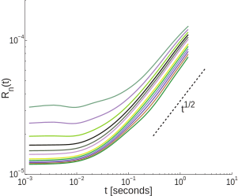
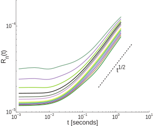
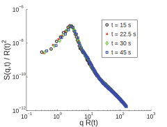
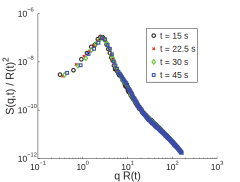
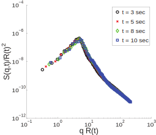
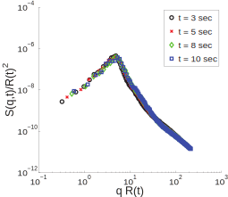

Brian A Camley & Frank LH Brown
Dynamic scaling in phase separation kinetics for quasi-two-dimensional membranes
The Journal of chemical physics 135 (22) 225106 (2011)
Amphiphiles meeting UW 2016
CEHINAV, UPM, Spain
daniel.duque@upm.es
Resources
Why this article

Why this article
- Lately, I have been doing hydrodynamics (Naval Eng)
- So, it seemed natural to do research on membrane dynamics while at UW
Some simulations
Conserved dynamics
We have conserved dynamics, since $\int \phi =
\langle\phi\rangle$ is constant. "Model B" procedure
begins with a free energy functional
$F=\int d\mathbf{r} \, f(\phi,\nabla\phi) $
With the chemical potential
$ \mu = \frac{\delta F }{\delta \phi} $
Recipe:
$\frac{d \phi}{d t} = D \nabla^2 \mu $
It's easy to show that $f=\frac12 \phi^2$ usual diff results, $\frac{\partial \phi}{\partial t} = D \nabla^2 \phi$
Chan - Hilliard theory
For phase separation, vdW-G-L:
$f(\phi) = - \frac a2 \phi^2 +
\frac b4 \phi^4 + \frac c2 (\nabla\phi)^2$
Whichs yields the chemical potential
$ \mu = \frac{\delta F }{\delta \phi} = - a \phi + b \phi^3 - c \nabla^2\phi $
Our conserved dynamics is
$\frac{\partial \phi}{\partial t} = D \nabla^2 \mu , $
the celebrated Cahn-Hilliard equation
Convection and hydrodynamics
Convection of $\phi$ due to velocity field $ \mathbf{u}$:
$\frac{\partial \phi}{\partial t} \rightarrow \frac{d \phi}{d t} $
$\frac{d \phi }{d t} = \frac{\partial \phi}{\partial t} + \mathbf{u} \cdot \nabla \phi $
Then, convection - diffusion is "simply"
$\frac{d \phi}{d t} = D \nabla^2 \phi $
and convected CH is "simply"
$\frac{d \phi}{d t} = D \nabla^2 \mu , $
The momentum equation
Applying convection to velocity itself results in the
Navier-Stokes equation:
$\rho \frac{d \mathbf{u} }{d t} = \eta \nabla^2 \mathbf{u} - \nabla p + \mathbf{f} $
Similar to Newton's 2nd law (yet so different!):
$m \frac{d \mathbf{u} }{d t} = - \alpha \mathbf{u} + \mathbf{f} $
The two equations
With the chemical potential$ \mu = - a \phi + b \phi^3 - c \nabla^2\phi $
$\frac{d \phi}{d t} = \gamma \nabla^2 \mu,$
$\rho \frac{d \mathbf{u} }{d t} = \eta \nabla^2 \mathbf{u} - \nabla p - \phi \nabla \mu $
Parameter overload!
There's $a$, $b$, and $c$, which can be related to: $\sigma$, $\xi$, and $\langle\phi\rangle$.
There's also $D$, $\eta$, $\rho$, length and time scales $\ldots$
But I can show that everything may be reduced to two parameters!
$ \mu = - \phi + \phi^3 - \nabla^2\phi $
$\frac{d \phi}{d t} = D^* \nabla^2 \mu,$
$\mathrm{Re} \frac{d \mathbf{u} }{d t} = \nabla^2 \mathbf{u} - \nabla p - \phi \nabla \mu $
Low Reynolds hydrodynamics
The Reynolds number is very low in membranes, so we end up with the creeping flow (Stokes) equation:$ \nabla^2 \mathbf{u} - \nabla p - \phi \nabla \mu = 0 $
Which can be solved for any force:
$ \nabla^2 \mathbf{u} - \nabla p + f = 0 $
Quasi-2D hydrodynamics
There is indeed an additional solvent-mediated force !$ \nabla^2 \mathbf{u} - \nabla p - \phi \nabla \mu - \eta_\mathrm{f} \int d^2\mathbf{r'} K(\mathbf{r}-\mathbf{r'}) \mathbf{u} (\mathbf{r'}) = 0 ,$
whose range is given by the Saffman-Delbrück length:
$L_\mathrm{SD} = \frac{\eta_\mathrm{m} }{ 2 \eta_\mathrm{f} } $
this term, I still don't know how to model ...
Cases
There should be a table for simulation cases! All the details are given as figure captions...| Lengths | |||
| case | $\xi$ (nm) | $L$ ($\mu$m) | $L_\mathrm{SD}$ (nm) |
|---|---|---|---|
| Fig 1 | $40$ | $30$ | $2500$ |
| Fig 2 | $20$ | $20$ | $25$ (!) |
| Figs 3 , 6 & 12 | $5$ | $5$ | $6.2$ (!) |
| Fig 7 | $40$ | $30$ | $\infty$ |
Figure 1

This case seems to be the only one with actual, realistic parameters ! For the rest of the cases, the solvent's viscosity is either $400\times$ that of water, or zero.
Figure 1
Figures 3&4
 

$R_n \sim t^{1/2} $
The article really concerns dynamic scaling, not so much actual systems
Figures 3&5

$R \sim t^{1/2} $
Figures 6 & 7


Figures 8 & 9
 

$R \sim t^{1/3} $
Figures 10 & 11
 

$R \sim t^{1/2} $
Criticism
- No dimensional study
- One set of reasonable parameters, the rest have no justification (why not vary the temperature, add detergent ... )
- I am not sure thermal noise should be included at all
- As mentioned, the spatial resolution does not really cover the interfacial zones, of width $\xi$
- I think the temporal scale is also too coarse
Times
The velocity time scale is set by $t_0 = \eta \xi / \sigma $| Times | ||
| case | $t_0$ ($\mu$s) | #steps = $t_0 / \Delta t$ |
|---|---|---|
| Fig 1 | $2\times 10^{-3}$ | $10^{-4}$ ! |
| Fig 2 | $5\times 10^{-3}$ | $5\times 10^{-5}$ !! |
| Fig 3 | $3\times 10^{-2}$ | $8\times 10^{-3}$ ! |
| Fig 7 | $2$ | $0.2$ |
Diffusion times
The diffusion time scale is set by $t_0 /D^* $. Some cases look better in this regard (not Figure 1!)| Times | ||
| case | $t_0/D^*$ ($\mu$s) | #steps = $t_0/D / \Delta t$ |
|---|---|---|
| Fig 1 | $0.05$ | $5\times 10^{-3} $ ! |
| Fig 2 | $61$ | $0.62$ |
| Fig 3 | $0.8$ | $0.8$ |
| Fig 7 | $50$ | $5$ |
Some results
Thanks
This presentation is at: https://ddcampayo.github.io
Created with reveal.js, the HTML Presentation Framework